第19章：障碍期权（上）（Barrier Options (I)）
A true trader is a human being endowed with the rare gift of a positively sloping learning curve. —— Taleb
导读：本章要解决的问题
障碍期权是全书第一个真正意义上的路径依赖（path-dependent）结构。对一个金融工程出身的读者，敲入敲出的解析解、反射原理、局部波动率这些工具大多在课堂上见过。本章要补的是另一层东西：当障碍把一张普通香草期权变成路径依赖工具时，交易员手里的 delta、gamma、vega 会以什么方式畸变，他能用什么近似去对冲，以及这些近似在哪里失效。
Taleb 在本章只处理"常规（regular）障碍"，也就是期权在虚值状态下敲入或敲出的那一类。它们的 payoff 在障碍处连续（趋近于零），所以相对温和。障碍处带巨大内在价值的"反向（reverse）障碍"留到第 20 章，那里需要先掌握美式二元期权。换句话说，本章是障碍交易的入门台阶，先在风险最小的结构上把直觉和工具建立起来。
把全章压缩成几条主线：
- 常规障碍期权在障碍处有 delta 跳变，这条不连续性决定了它的对冲成本、滑点，以及为什么动态对冲"很贵"。
- 敲入与敲出在同 strike、同到期下互补成香草，这条恒等式既是定价关系，也是"short barrier"对冲规则的根。
- 障碍可以被近似看成一个 risk reversal，由此引出 put/call 对称、反射原理与 Girsanov 这条从交易直觉通向方法论的链条。
- 障碍的真实到期由一个分布化的首次穿越时间（first exit time）决定，它短于名义到期。这一点让任何用单一波动率、用香草静态复制障碍的做法在原理上就是错的。
下面的笔记沿原文小节顺序展开，在每个节点把 Taleb 的交易语言翻译成我们熟悉的数学命题。
一、障碍期权的分类：常规与反向
障碍期权（barrier option）是带第二个执行价的普通期权，这第二个价位被称作触发价（trigger）、敲出价（outstrike）或障碍（barrier）。当标的穿越障碍时，期权的状态发生切换：敲出期权（knock-out）就此消亡，敲入期权（knock-in）就此诞生。
Taleb 给出的第一层、也是最关键的划分，是常规（regular）与反向（reverse）。判据落在期权消亡或诞生时它处于价内还是价外：如果障碍布置得使期权在虚值时死去，就是常规敲出；如果期权在实值、握有可观内在价值时被触发，就是反向。反向结构难管得多，因为标的逼近障碍时期权价值正高，一次穿越就抹掉一大块内在价值，对冲头寸会在障碍处剧烈跳变。交易员因此把常规敲出戏称为"和反向比起来算是香草"。
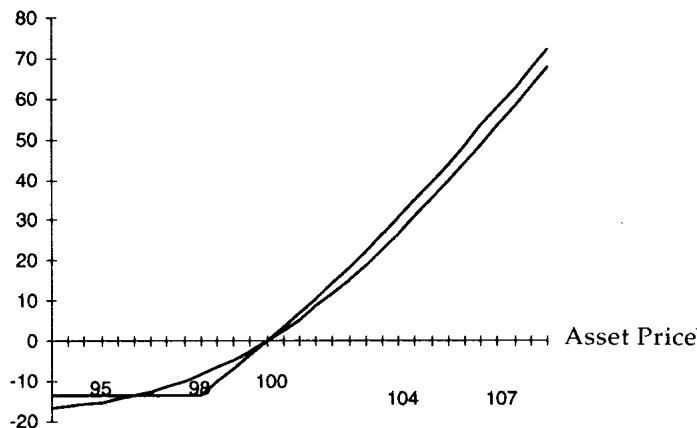
原文表 19.1 把八种单障碍结构按交易难度排了序。可以这样记：触发方向与期权类型"同向"时（向下敲的 call、向上敲的 put）期权在虚值处生灭，属低难度；"逆向"时（向上敲的 call、向下敲的 put）期权在实值处生灭，属高难度。
| 结构 | 别称 | 生灭时的状态 | 交易难度 |
|---|---|---|---|
| Down-and-out call | 常规敲出 call | 虚值处死亡 | 低 |
| Down-and-out put | 反向敲出 put | 实值处死亡 | 高 |
| Up-and-out call | 反向敲出 call | 实值处死亡 | 高 |
| Up-and-out put | 常规敲出 put | 虚值处死亡 | 低 |
| Down-and-in call | 常规敲入 call | 虚值处诞生 | 低 |
| Down-and-in put | 反向敲入 put | 实值处诞生 | 高 |
| Up-and-in call | 反向敲入 call | 实值处诞生 | 高 |
| Up-and-in put | 常规敲入 put | 虚值处诞生 | 低 |
本章只覆盖这张表里"低难度"的四类常规结构。返利（rebate）和双障碍放到下一章，因为带返利的障碍更接近美式二元期权。除非特别说明，本章涉及的都是欧式期权。
二、敲出期权：折价的代价藏在障碍处
障碍处的 delta 不连续是核心难点
敲出期权之所以难交易，根源在障碍处 delta 的不连续（discontinuity）。期权穿越触发价的瞬间，价值从某个正数跳到零，对冲头寸必须随之骤变。滑点（slippage）在这里最大，尤其当市场跳空（gap）穿越障碍、交易员被迫在远比预期糟糕的价位平掉对冲时。这正是"动态对冲代价高昂"这句话最具体的来源之一。反过来，持有足够大头寸、能影响市场的交易员，有时能靠这种结构制造可观利润，这也是金融界谈之色变的"流动性洞（liquidity hole）"的成因。
Taleb 给的数值例子很直观。标的在 100、无远期曲线时，一个月平值期权值面值的 1.80%；同样的平值 call，但在低于现价 2% 处敲出，只值 1.34%（外加更宽的买卖价差带来的更高佣金）。从客户角度看：若市场立刻上涨，敲出 call 等价于一个买得更便宜的普通 call；若立刻下破，最坏情形与普通 call 相同；唯一吃亏的情形是市场先跌触障碍、再反弹，而这种路径在现实中出现的频率比理论预期略高。
谁在买敲出期权
Taleb 列出三类主要客户，他们的共同点是都对路径有信念：
- 持有大量股票敞口的基金经理，为压低对冲开支而买敲出 put。他们觉得市场涨过某个水平（比如高出 5%）后就不再需要保护，因为那时本就该减仓。这种损益形态接近 risk reversal（领口/collar），区别在于剧烈上涨时未必被迫交出股票。
- 相信趋势与序列相关（serial correlation）的投机者。趋势跟随者愿意做多，只要市场不跌破某点；于是买一个会在那点敲出的虚值 call。敲出的路径依赖与他们对分布形态的信念一致，障碍常被布置在图表关键位附近。一旦趋势破位，他们也不介意取消这笔押注。
- 有或有敞口的企业，相信市场朝有利方向移动时能把敞口平掉。
敲出契合趋势跟随的心态，敲入则契合均值回复的心态。这是路径依赖结构对"分布形态信念"的直接编码：敲出在市场顺势时存活、逆势时消亡；敲入则总是逆着方向苏醒。
卖方为什么要多买 delta
障碍处 delta 的跳变可以量化。在 100 call / KO 98（读作"100 看涨，98 敲出"）这个例子里，穿越障碍时 delta 从 .66 跳到零。
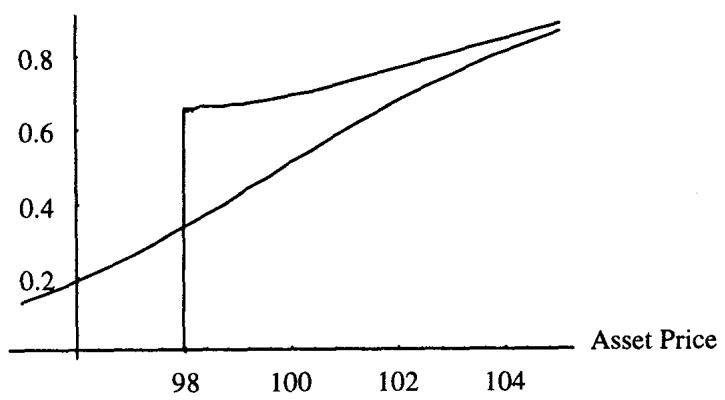
图 19.2 显示，平值附近香草的 delta 在 50% 左右，而敲出的 delta 约为 68%。卖出敲出 call 的交易员需要比卖香草时买更多标的。原因在于：上涨时敲出与香草价格趋同，而交易员当初是以低于香草的价格卖出敲出的，所以要用更高的 delta 去补这块差。市场越往上走，两者的 delta 与价格越收敛。
这里有一条容易被系统忽略的成本：
卖出障碍期权时，必须把障碍处平掉对冲的交易成本计入定价。
按例子推演：若市场立刻下跳 2 个点，68% 的 delta 大约产生 1.36 每单位的对冲收益（精确算因 gamma 效应平均 delta 约 .67，得 1.34），恰好等于卖出价 1.34。但交易员要的不止 1.34，他还得覆盖在障碍处平仓的交易成本。假设恐慌使障碍处执行滑点达 .10，这相当于在 1.34 之上至少多出 的成本（仅当期权确实终止时）。于是操作者的最低公允价应是
其中触障概率对应一个"在 98 处支付 .066、与障碍同时到期的美式二元期权"的价值。算下来大约 1.39，而这还只是下限，更多成本会继续冒出来。这条推演本身就是一次实务到理论的映射：障碍处的滑点补偿 = 一个美式二元（数字）期权的价值，障碍期权天然内嵌了一个数字期权。
随着市场逼近障碍，敲出与香草的 delta 开始分道：交易员要不断累积更多 delta，去补"可能很快失去期权、被免除义务"这件事；但当标的极度贴近障碍时，这些 delta 又变得多余，必须反手卸掉。这是一把双刃剑。触障是好事（卸掉一个负债），但触障的方式很关键——市场若跳空穿越（它经常如此），对冲会在比预期更差的水平被平掉，交易员反而会希望自己没碰到障碍。
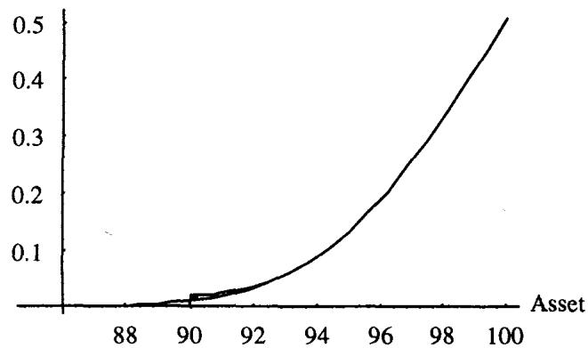
图 19.3 给出 100 call / 90 的情形。当 strike 与 trigger 拉得越开，敲出的价格与 delta 越像香草，障碍带来的风险也越小。
三、敲入期权：敲出的镜像
敲入期权在某价位被触及时才诞生。常规敲入诞生于虚值，触发条件简单；反向敲入则带着内在价值（按远期算）来到世上，存在本身就复杂。把敲入当成独立工具研究的意义有限，因为按构造它就是香草与敲出的组合，这一点本节稍后会证明。
客户需求方面，敲入对应均值回复心态，是天生逆着市场方向苏醒的工具。但对动态对冲者，Taleb 提醒：与其纠结产品用途，不如把精力放在对冲技术上。
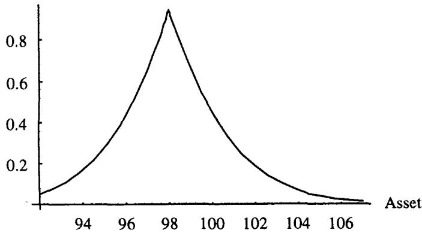
用同样的例子，一个月 100 call 在 98 敲入，图 19.4 的价格曲线第一次看会让人困惑：它像是两段 delta 符号相反的期权拼起来。
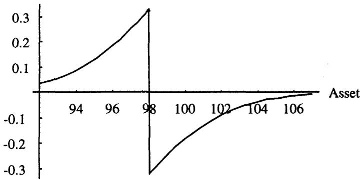
看 delta（图 19.5）就清楚了。敲入 call 表面吓人，其特征其实与敲出完全一致：delta 的跳变幅度相等，只是符号相反。在障碍处，敲入的 delta 从 -.32 跳到 .33，即操作者有 .65 的 gap delta 要补；敲出 call 在同一点的 gap delta 则是向下跳 .65。
互补恒等式与 short barrier 规则
把这两件事并排放，结论就出来了：同时持有一份敲入、一份敲出（同 strike、同到期），两者在障碍处的 gap delta 恰好抵消，操作者在障碍处无事可做。这就是套利恒等式
其中 是执行价， 是到期时间， 是障碍水平。这条恒等式在理论上不过是 payoff 的线性叠加：在任意一条路径上，"碰过障碍"与"没碰过障碍"是对全样本空间的一个划分，敲入与敲出的支付在每条路径上相加，正好还原香草的支付。由终值在所有状态下相等，反推两者之和在整个存续期内等于香草。
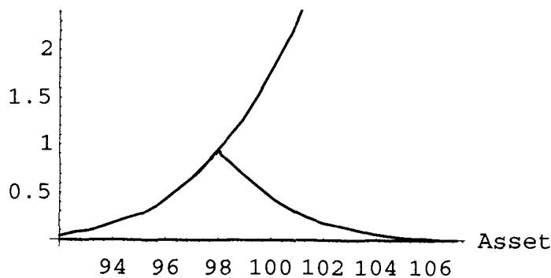
图 19.6 把 100 call KO 98、100 call KI 98 与 100 call 画在一起。98 以下敲入与香草重合（它此时已变成香草），敲出则已死亡；98 以上敲出像香草，敲入则越来越偏离香草。
Taleb 在此定义了"long the barrier"这个贯穿后文的概念：
持有障碍头寸（long the barrier）指操作者从触障中获益，要么因负债减少（敲出），要么因财富增加（敲入）。
于是 short knock-out 是 long the barrier，long knock-in 也是 long the barrier。短敲出在触障时受益，因为或有负债消失；长敲入同样受益，因为它从一个或有资产（底层期权）变成无条件资产。由互补恒等式，long knock-in 加 long knock-out 在障碍处是平的（flat the barrier），只剩对底层香草的敞口。这就是"短障碍规则（rule of the short barrier）"的来源：把敲入和敲出配成香草，障碍处的跳变风险互相注销。
四、波动率的影响：障碍如何非线性地逼近
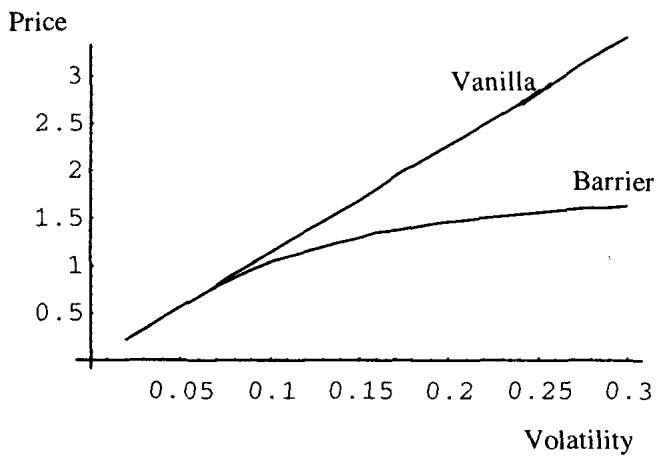
图 19.7 画的是敲出对波动率水平的价格敏感性。波动率升高时，香草的 vega 保持线性，敲出的 vega 却逐渐变平、趋于零。直觉是：波动率上升会以非线性方式把障碍"拉近"，最终障碍会主导整张期权，波动率越高，期权能活的时间越短。
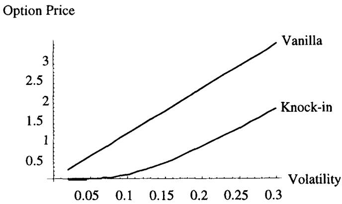
图 19.8 给出敲入的相反效果：敲入对波动率呈凸（convex）vega，敲出呈凹（concave）vega。这对对冲意义重大。
波动率以非线性方式把障碍拉近。因为波动率对偏离分布中心的事件（即虚值和实值期权）总是非线性地起作用。
靠近障碍时，两类期权的 vega 不同，障碍在此处失去凸性；远离障碍（在"另一侧"）时，它们的行为乃至对波动率的敏感性又开始收敛。这给出一个实用的系统测试法：把敲出 call 的障碍设到 0（或 .00001）、敲出 put 的障碍设到一个极大值，验证价格是否退化为香草价。
障碍部分贡献的 vega，对卖方是凹的。障碍 vega 加香草 vega，对 long barrier 合成出凹 vega，对 short barrier 合成出凸 vega。当交易员远离障碍、进入香草主导的区域时，这种凹凸性会逐渐消失。
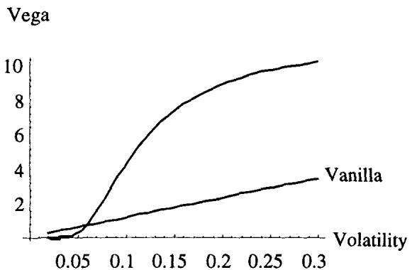
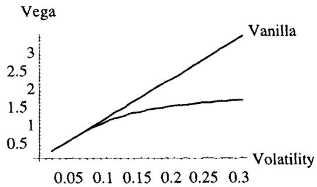
图 19.9、19.10 画出两类工具的 vega。Taleb 又把例子换成执行价 105、触发 98、六个月、波动率 15.7% 的虚值结构做更细的分析。
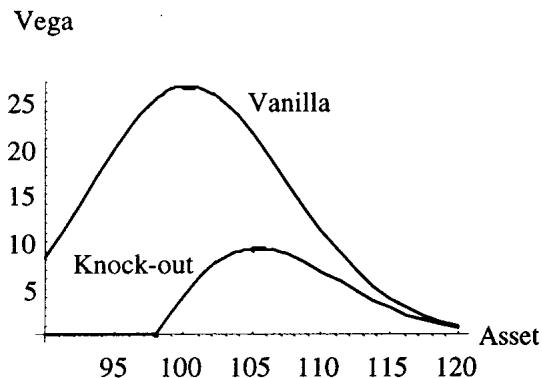
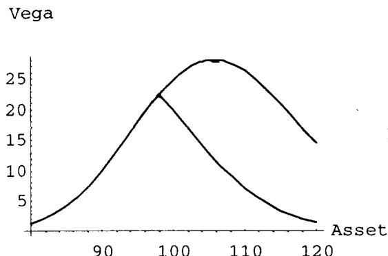
图 19.11 显示市场离障碍越远，敲出 call 的 vega 越像香草；图 19.12 则显示越靠近触发价，敲入 call 的 vega 越像香草。这种凹凸性的本质，到下一节会看清楚：障碍可以被读成一个 risk reversal，而 risk reversal 的 vega 正是一边升、一边降。
五、加入漂移：远期线带来的复杂性
只要给世界加上利率，障碍期权的 delta 就可能突破 1，这在香草里是不会发生的。
若现货-远期线是平的，常规敲出（虚值处触发）的 delta 永远不会高于 1。但在上斜的远期曲线下，call 的 delta 可以高于 1；在下斜曲线下，put 的 delta 也可以。
这条规则的两个延伸是：
- 障碍附近，delta 越高，期权保留的价值也越高。
- 任何高于 1 的 delta 都会在风险图的某处引出负 gamma。delta 的抬升是为了补偿障碍处强烈的 payoff，一旦市场移入香草主导的区域，delta 会被拉回正常比例。
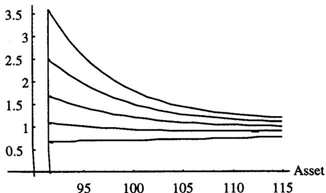
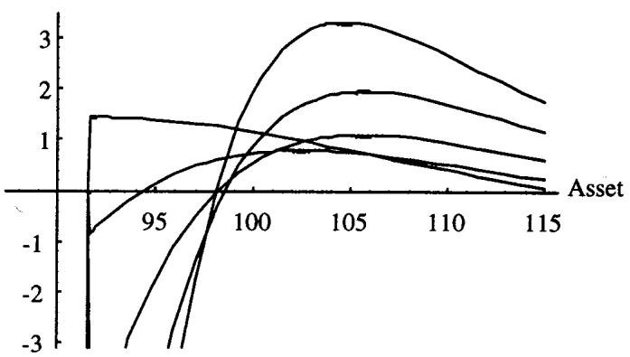
图 19.13、19.14 画出利率上升对 delta 与 gamma 的影响。gamma 的低谷极端到无法用常规坐标画下。高利率下，头寸开始显出三阶矩（第三动差）的增加，所以 Taleb 先把利率拿掉做简化分析，后面再加回来。
理论上看，delta 越过 1 与负 gamma 同时出现并不意外。delta 在标的方向上若是递减的（），按定义就是负 gamma。障碍迫使 delta 在某段区间被人为推高以匹配触障 payoff，这段抬升必然在相邻区间以更陡的回落收尾，于是 。这正是"任何 delta 高于 1 都对应某处负 gamma"的数学含义。
Risk reversals
把敲入、敲出的 vega 与 risk reversal 的 vega 放在一起比较，会看到惊人的相似：vega 在一个方向上升、在另一个方向消退。正是这种相似性催生了大量"用 risk reversal 复制期权"的文献。
六、Put/Call 对称与障碍期权的对冲
本节讲文献里常见的"用对称性对冲障碍"的技术，并提醒交易员盲目套用的陷阱。公式的严格推导留到后面的"反射原理"小节。
Option Wizard：期权对称
每个欧式期权都有一个能匹配其风险的对称配对。对称是相对远期而非现货建立的，二者之差称为"距离（distance）"。在无 skew（远期两侧波动率对称）的假设下，put 与 call 之间的距离这样算：设 是一个执行价， 是远期，对称执行价 （ 是 call 则 是 put，反之亦然）满足
于是
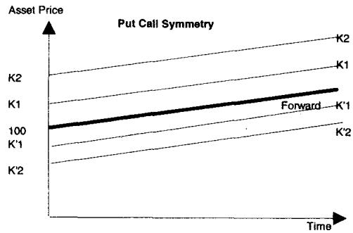
第二个对称执行价被设成使远期成为两个执行价的几何平均。在无 skew 时，put 与 call 的价格比等于执行价之比的平方根：
这套对称的性质是：按平方根比例一多一空地配出来的组合，应当 gamma 为零、vega 为零，在到第三阶矩之前保持中性。其理论根在 BSM 的对数正态对称性：以远期为对数坐标原点时，价内与价外按 镜像分布，几何平均 恰好把两个执行价放在关于 对称的位置上，这与 change of numeraire 下"一边的 call 即另一边的 put"是同一件事。
不过 Taleb 直言：有经验的动态对冲者认为对称这个概念不稳定。"上行"与"下行"执行价之间存在极大差异，大到市场涨或跌时会造成实质性的行为分化。这套方法被作者判定为有疑问的，其价值在教学，用来揭示障碍结构的风险所在。
用 risk reversal 近似复制障碍
假设无漂移。把敲出 call 看成"一个 call，但又不完全是 call"，于是它可以是一个 long call 配一个 short 虚值 put。这个虚值 put 的执行价要选得与 call 在障碍处完全对称，对称的方式与数量要使整个组合在市场到达障碍时恰好值 0。这样的 risk reversal 在除终止之外的所有地方都能近似复制障碍，到障碍时则需在市场上把它平掉。这套复制只在波动率全程不变时才有效。
Case 1：敲出 call
设市场在 100、波动率 15.7%：
- 六个月香草 105 call：2.35
- 六个月 KO(105/98) call：1.06（记号 KO(strike, outstrike)）
对称 put 的执行价要满足 ，得 。该 91.47 put 价值 1.20。put 对 call 的比例应为 。交易员要验证：在障碍 98.00 处，这个 risk reversal 应当值 0。
复制还有一个附加约束：障碍被触及后要在市场上平掉 risk reversal。但约束不必太苛刻，触发后立刻做一次 delta 中性即可，之后有充裕时间慢慢平。
| 资产价格 | KO | Call(105) | Put(91.47) | Risk Reversal（long 1 call，short 1.0714 put） |
|---|---|---|---|---|
| 91 | 0.00 | 0.48 | 4.07 | |
| 95 | 0.00 | 1.06 | 2.47 | |
| 98 | 0.00 | 1.74 | 1.63 | 0 |
| 99 | 0.53 | 2.03 | 1.40 | 0.53 |
| 100 | 1.06 | 2.35 | 1.21 | 1.06 |
| 105 | 3.85 | 4.42 | 0.53 | 3.85 |
| 110 | 7.07 | 7.30 | 0.21 | 7.07 |
表 19.2（节选）显示：障碍以上，risk reversal 的值与 KO 价格高度吻合；到障碍 98 处它归零。逻辑是：障碍不过是某种 risk reversal，因此它的 vega 应当像 risk reversal 那样表现。一个重要结论是：当存在下行 skew（downside skew）时，障碍 call 应当卖得比平 skew 时更便宜。
把它推广到敲入很直接。由 ，得 。而 KOC 由 复制，代入：
所以敲入的复制组合在障碍被触及前就是那个 put（按某比例），触及后变成 call。完美复制要在障碍处把 put 换成 call（执行那笔 risk reversal）。
Case 2：敲入 call
敲入是一个开关：在 98 这个从一态切到另一态的点上，比例为 1 call 比 1.0714 put 的 risk reversal 恰好值 0。所以敲入代表在那个价位上从一边切到另一边。
| 资产价格 | KI(105/98) | Call(105) | Put(91.47) | 复制（障碍上方 long 1.0714 put，下方 long 1 call） |
|---|---|---|---|---|
| 91 | 0.48 | 0.48 | 4.07 | 0.48 |
| 95 | 1.06 | 1.06 | 2.47 | 1.06 |
| 98 | 1.74 | 1.74 | 1.63 | 1.74 |
| 99 | 1.50 | 2.03 | 1.40 | 1.50 |
| 100 | 1.29 | 2.35 | 1.21 | 1.29 |
| 105 | 0.56 | 4.42 | 0.53 | 0.56 |
| 110 | 0.22 | 7.30 | 0.21 | 0.22 |
表 19.3（节选）验证：障碍下方敲入与香草 call 完全重合（它就是香草），上方则跟随那 1.0714 个 put。
这套方法的三个好处
把障碍看成内嵌的 risk reversal，带来三项结果：
- 为 skew 定价。 分析障碍时要记着 skew 的斜率，这套思路与二元期权分析相似。
- 为波动率曲线定价。 波动率期限结构关系重大（后面"停止时间"会讲）。有意思的是，障碍的分解会得到波动率阶梯上两个不同久期的期权：敲出 call 的 put 腿对应一个周期，call 腿对应另一个；敲入的情况更复杂。
- 对冲。 障碍期权像 risk reversal 一样由两个极端分量构成，任何时刻只有市场所在邻域的那一个占主导。这只对常规障碍成立（虚值处敲入或敲出），对反向障碍不成立（那里巨大的 payoff 始终主导）。前面例子里，上涨时 call 苏醒并主导、下跌时减弱由 put 接管，于是结构在上涨时呈 long gamma、下跌时呈 short gamma。
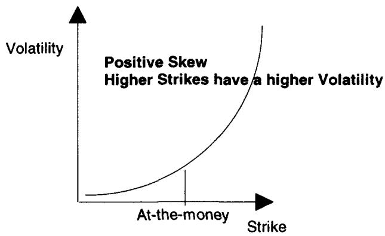
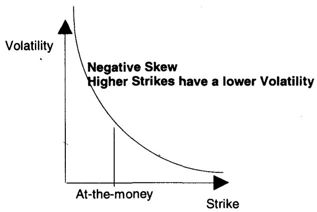
这套方法的陷阱
risk reversal 对冲法建立在两个假设上：skew 稳定（最好恒定），远期曲线平且恒定（无漂移、无升贴水）。
skew 一旦不稳定，对冲精度就下降。初始时无论操作者在正还是负 skew 进场，头寸都是局部匹配的，因为 skew 价格已被纳入。但 skew 不稳定，日后可能漂移甚至反转，使交易与 skew 斜率脱钩。这种脱钩之所以发生，是因为 skew 对冲的久期未必匹配障碍的久期——更糟的是，由于停止时间本身不稳定，可能根本不存在一个可供对冲 skew 的真实久期。
利率或持有成本变得极正或极负，也会让方法失效：按前面的规则，障碍 call 在障碍上方可能不再像 risk reversal 那样表现。
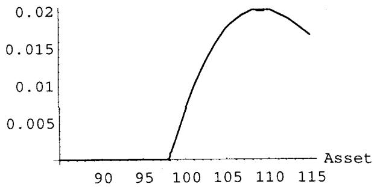
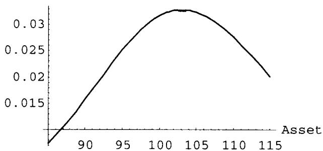
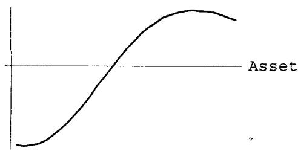
在平远期曲线下，敲出的 gamma 像 risk reversal 的右半边（图 19.15）；敲入的 gamma 像山丘右侧一个 call、左侧一个 put 的 gamma（图 19.16）；risk reversal 的 gamma 见图 19.17。
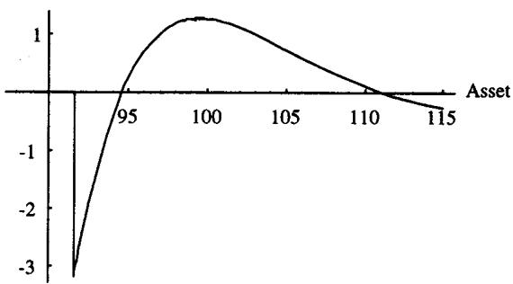
引入利差，局面就复杂了（图 19.18）。Taleb 拿墨西哥这类利差 45% 的新兴市场举例：一年期、对美元的敲出 call（对墨西哥比索是 put），标的标定为 100，敲出价 105，执行价 102，波动率取 50%。这能解释为什么机构长期管不好新兴市场头寸。
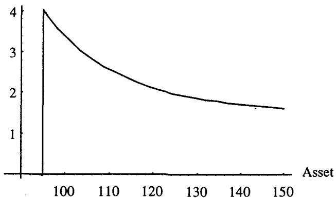
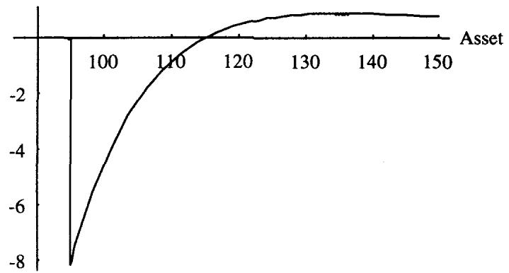
图 19.19、19.20 显示：在这种条件下，障碍期权表现得像整个 risk reversal，而非图 19.15 那样的半个，它的 gamma 在障碍右侧改变符号，相当令人困惑。要为这种"墨西哥效应"在任何路径依赖期权上定价，必须用后面讲的 Dupire-Derman-Kani 技术。
七、Skew 环境下的障碍分解
如果在 Case 1（敲出 call）里，put 交易在溢价上（低执行价比高执行价贵，即正常的下行 skew），操作者就能把障碍卖得更便宜。
假设日历平坦（同波动率不分到期），在正 skew（高执行价溢价）下，敲出 call 比平 skew 世界里更便宜；负 skew 则相反。put 同理（前提是常规敲出而非反向敲出）。一般地，若触发价高于执行价，敲出期权就是 short the skew，反之 long the skew。
交易员注意到，skew 的存在伴随第三动差的明显漂移（即强的第五动差）。强正/负三阶矩的分布会有强正/负五阶矩和更高的四阶矩。市场的波动率曲面需要 skew，是不对称性的结果，也是结构性不稳定的标志。
Long skew / short skew
Long skew 指 vega（和/或 gamma）在上涨中增加、下跌中减少，等价于从正三阶矩中获益。Short skew 则相反，从负三阶矩中获益。
Case 1 的 skew 量化尝试
skew 分析分两步：先忽略首次穿越时间，把世界简化到只看空间维度上的 skew；熟悉停止时间后，再在两个维度上看。这里出于教学在"平日历"世界里进行，即期权不分到期都按同一波动率交易。
如果复制组合按 skew 曲线定价，交易员要找到在触发时刻值 0 的组合，这需要卖一个更虚的 put。设 skew 的斜率使 91.47 的波动率比 105 call 高 1.7 个点，按 Case 1 的比例复制（表 19.4），会发现行不通：risk reversal 在障碍处有 (0.45) 的残值。于是要给 put/call 对称引入 skew 修正，去找那个与 call 组合后在障碍处值 0 的 put。
通过迭代求得这个 put 是 89.92（它的波动率比 105 call 高 2 个点）：89.92 put 在 98 处值 1.62，乘 后正好等于 1.74，即 call 的值。
| 资产价格 | KO（平 vol 定价） | Call(15.7 vol) | Put(比 call 高 2 vol) | Risk Reversal |
|---|---|---|---|---|
| 95 | 0.00 | 1.06 | 2.94 | |
| 98 | 0.00 | 1.74 | 2.05 | (0.45) |
| 99 | 0.53 | 2.03 | 1.80 | (0.10) |
| 100 | 1.06 | 2.35 | 1.58 | 0.65 |
| 105 | 3.85 | 4.42 | 0.79 | 3.58 |
| 110 | 7.07 | 7.30 | 0.36 | 6.91 |
关键提示：因为卖的是更虚的 put，整个结构的行为会与之前不同。skew 交易的第一课，是认识到不同波动率交易的期权有不同的时间衰减速度。交易员解出的复制组合今天在触发处无残值，明天却会有，因为他空头的 89.92 put 比 105 call 衰减得更快。
结论：正 skew 压低障碍的价值。
| 资产价格 | KO | 三月变化 | Call | Put | Risk Reversal | 净变化 | 净复制 P/L |
|---|---|---|---|---|---|---|---|
| 98 | — | 0.80 | 0.38 | 0.40 | 0.40 | 0.40 | |
| 99 | 0.38 | (0.15) | 1.01 | 0.29 | 0.70 | 0.20 | 0.35 |
| 100 | 0.77 | (0.29) | 1.26 | 0.22 | 1.03 | 0.02 | 0.30 |
| 105 | 3.06 | (0.79) | 3.19 | 0.05 | 3.13 | (0.64) | 0.15 |
| 110 | 6.24 | (0.83) | 6.26 | — | 6.26 | (0.74) | 0.08 |
表 19.5 验证：三个月后，障碍上方的复制组合留下一个残值，让以"肥 skew"定价卖出障碍的交易员能挤出利润。这印证了 skew 交易员的直觉：在 skew 上得到的 put/call 对称会有利地衰减。最后一列的差额会先升后归零（市场不动则所有期权到期归零）。
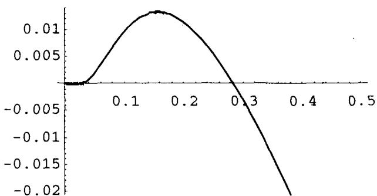
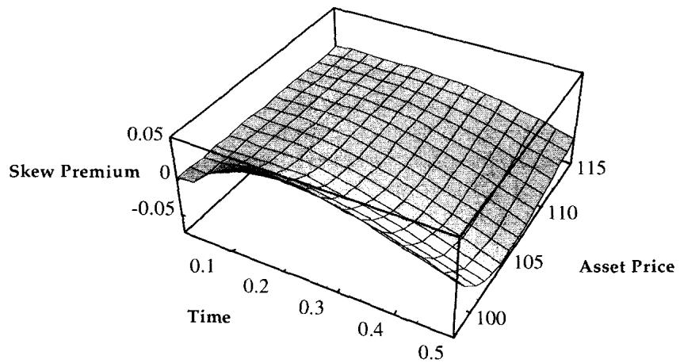
图 19.21、19.22 显示 skew 溢价对到期时间的依赖。它说明存在 skew 时需要更复杂的定价工具，目前没有已知的闭式公式，必须用计入 skew 的数值方法给障碍定价。T 分解公式为：
即"带 skew 的障碍 = 无 skew 障碍 + 复制组合残值在触障时间上的条件期望"。反射原理与 Girsanov 定理会加深对这套方法的理解。这个分解本身就是测度论语言：残值的条件期望相对触障（停止）时间求取，正是用 optional sampling / 强马氏性把路径在停时处"切开"的写法。
八、反射原理
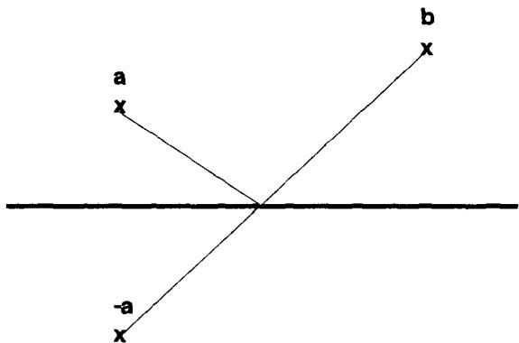
看障碍对称的另一个角度是反射原理（reflection principle）。对随机游走，从点 到点 、不穿过原点（零）的路径数，等于从 到 的路径数。这条原理只对算术路径成立，要套到金融市场，得用价格的对数来"作弊"。
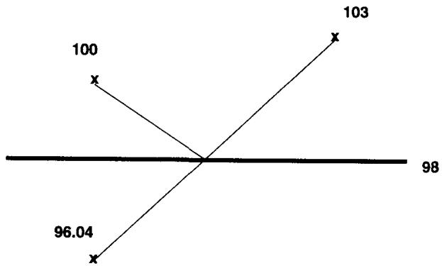
这把我们带回期权对称（图 19.24）。市场在 100、障碍在 98：从 100 到任何更高点、不触碰 98 的路径数，等于从 到同一点的路径数。期权对称用对数定义距离以适配几何布朗运动，所以 。
二项树例子：用反射原理给障碍定价
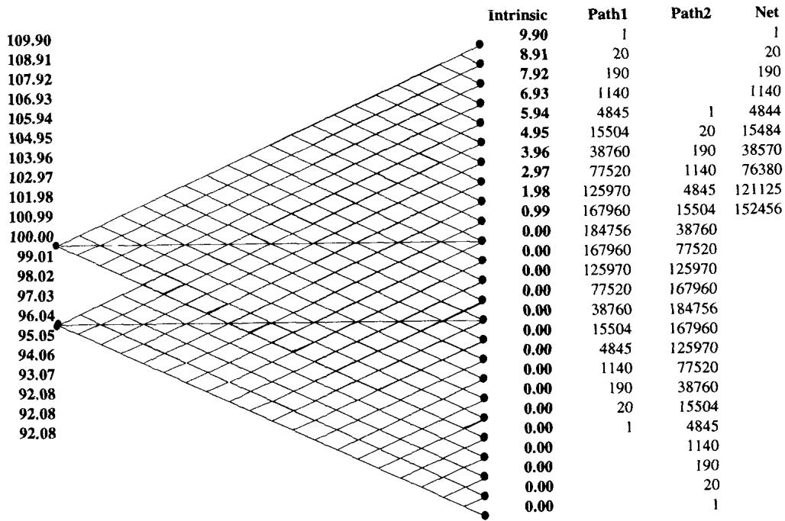
图 19.25 展示从 100 出发、通往价内（高于 100）部分的路径。设 20 个交易日（一个月），每天移动 .99，风险中性，初始让上行概率等于下行概率。Path 1 是从 100 通往各终端节点的路径数（即香草期权）；Path 2 是从 96.04 到同一终端节点的路径数（即香草与障碍之差）。
香草定价的常规做法是用终端节点的内在价值乘该节点出现的风险中性概率。要小心：这里的风险中性是套利推导（期权 = gamma 损益的期望成本，见 Module B），而非真实概率。
总路径数为 。例如 103.96 节点的期望支付 。把每个可能结果按概率加权可验证无漂移下加总为 100，这就是"时间 资产价格的条件期望"（条件指基于当前信息）。
| 终值 | 内在 | 路径数 | 概率(%) | 期望值 |
|---|---|---|---|---|
| 105.94 | 5.94 | 4,845 | 0.46 | 0.02745 |
| 103.96 | 3.96 | 38,760 | 3.70 | 0.14638 |
| 101.97 | 1.98 | 125,970 | 12.01 | 0.23787 |
| 100.99 | 0.99 | 167,960 | 16.02 | 0.15858 |
| 100.00 | — | 184,756 | 17.62 | — |
| 合计 | 1,048,576 | 0.872 |
表 19.6 把所有节点的期望值加总，得到香草 100 call 约 0.872。Path 2 用反射原理给出"不穿过障碍"的路径数，障碍期权的价值就是 payoff 乘"净路径/总路径"。
| 资产价格 | 内在 | Path 1 | Path 2（反射） | 净 | 概率(%) | 期望值 |
|---|---|---|---|---|---|---|
| 105.94 | 5.94 | 4845 | 1 | 4844 | 0.46 | 0.027 |
| 103.96 | 3.96 | 38760 | 190 | 38570 | 3.68 | 0.146 |
| 101.98 | 1.98 | 125970 | 4845 | 121125 | 11.55 | 0.229 |
| 100.99 | 0.99 | 167960 | 15504 | 152456 | 14.54 | 0.144 |
| 100 | 0.00 | 184756 | 38760 | 145996 | 13.92 | — |
| 合计 | 1048576 | 0.844 |
表 19.7 给出 98 敲出的价格约 0.844（注意它略低于香草 0.872，差额就是被敲出的那部分）。由此得到核心恒等式：
无 skew、无漂移时，资产在 、执行价 、障碍 的常规敲出，等于同 strike、同到期的香草，减去同一香草但以镜像现货 定价的值—— 是 关于 的对称倒数（），数量按 调整。
例：三个月敲出 call，strike 100、spot 100、barrier 98，等于香草减去 倍的"以 96.04 定价的同一香草"。再用 put-call parity 与 change of numeraire：以 96.04 现货定价的 100 strike call，等价于以 100 现货定价的 96.04 put。这就证明了前面的 skew 规则。推广到反向障碍或带返利的常规障碍，规则更复杂，需加上对应美式二元期权的 payoff。
反射原理在这里把"对称对冲"从经验技巧升格为定理：障碍敲出价 = 香草价 − 镜像香草价，本质是首次穿越分布的反射公式（the reflection of Brownian motion at a level），把"碰过障碍"的路径用镜像路径一一计数后扣除。
九、Girsanov：把漂移装回去
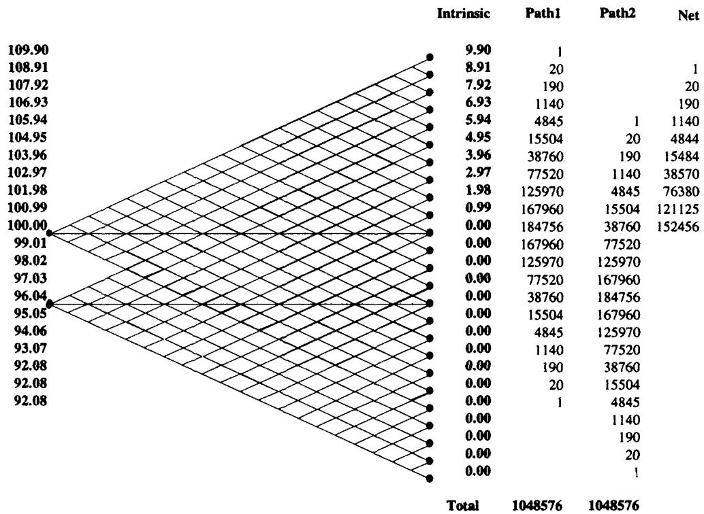
把漂移引入上述框架并与反射原理混合很容易：在完全相同的路径结构上赋予不同概率，以补偿漂移。路径不变，只移动概率来改变 payoff。设这一个月里现货需赚 .99%，即一月后期望价为 100.99。Girsanov 定理允许交易员把每个结果的概率上调或下调，使期望回报达到 100.99，做法是平移终端概率。重新定价后，整个组合的价值随之改变（表 19.8）。
| 资产价格 | 内在 | Path 1 | Path 2 | 净 | 概率(%) | 期望值 |
|---|---|---|---|---|---|---|
| 103.96 | 3.96 | 77520 | 1140 | 76380 | 7.28 | 0.288 |
| 102.97 | 2.97 | 125970 | 4845 | 121125 | 11.55 | 0.343 |
| 101.98 | 1.98 | 167960 | 15504 | 152456 | 14.54 | 0.288 |
| 100.99 | 0.99 | 184756 | 38760 | 145996 | 13.92 | 0.138 |
| 合计 | 1048576 | 1.369 |
这正是测度变换的精髓：Girsanov 改变测度而不改变路径（样本空间不变，只换概率权重），几何上就是保持二项树的形状、只重排上下行概率。它与反射原理结合，就能在带漂移的世界里给障碍定价——把漂移吸收进概率测度，反射计数仍在原路径上进行。
十、时间对敲出期权的影响
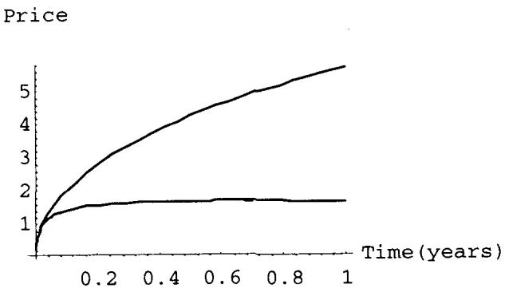
对常规敲出，时间的作用不算阴险（反向敲出才折磨人）。时间让底层期权更快失值，但同时加剧障碍处的不连续，两者部分抵消：将被敲掉的东西，本来价值就越来越小。图 19.27 显示这一点。
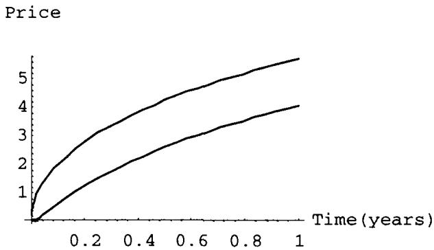
对敲入，障碍主导结构的能力较弱，因为结构里没有相互冲突的期权。图 19.28 说明这一效果。
十一、首次穿越时间及其风险中性期望
预期首次穿越时间（first exit time，或 stopping time）是资产价格在给定到期日条件下、预期穿越某点的时间。Module G 给出其分布与期望的计算。
障碍期权与欧式二元期权不同，必须用久期相近的工具来对冲，这就要求随时知道预期首次穿越时间，这里即障碍被触及的时间。名义到期与预期停止时间之差，对应障碍在结构里的主导程度：障碍弱（对风险影响小）时，预期穿越时间等于名义久期；障碍强时则显著更短。
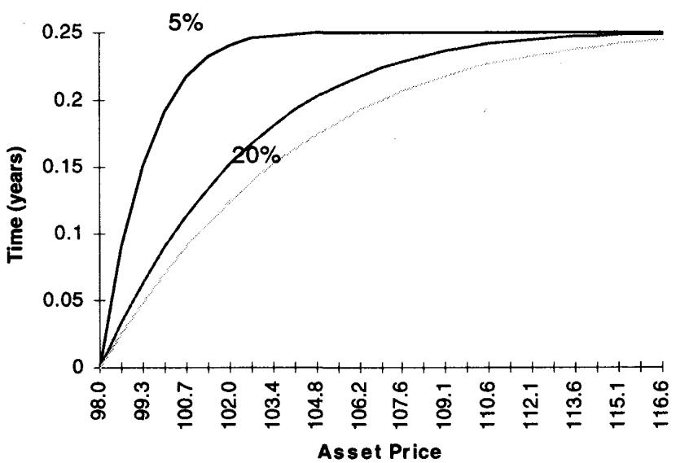
图 19.29 显示：波动率上升，期权寿命缩短，障碍开始主导；波动率低时底层期权主导，预期首次穿越时间趋于香草到期。
首次穿越时间必定短于或等于名义到期，这使得任何用香草组合做的非套利静态复制都不完美。
许多简化的对冲法（如前面的 risk reversal 静态复制）不计入久期的模糊性，可能相当危险。许多软件商把早期学术文献里的同方差（恒定波动率）定价工具直接丢给交易员，只用一个波动率，而障碍可能提前到期，这在波动率期限结构上斜时导致高估，下斜（backwardation）时导致低估。
这条风险管理规则的后果是：
- 任何针对障碍的 vega 对冲，都要按首次穿越时间匹配障碍 payoff。
- 对冲障碍带来的远期敞口要谨慎。首次穿越会移动、变长或变短；变长就要延长对冲久期，这种再平衡消耗巨大交易成本，因此建议在比名义更短的久期上对冲。
- 首次穿越时间依赖波动率。市场有波动率曲线（正或负）时，它会相应变长或变短。
这一节把"障碍的真实久期是分布化的随机变量"这件事讲透了。理论上，首次穿越时间 是一个停时，它有自己的（逆高斯型）分布；用单一波动率给障碍定价，等于把这个分布塌缩成一个点，必然在期限结构非平时定价错误。
十二、障碍期权定价的难点与近似法
既然首次穿越时间不确定，定价就必须知道它落在期限结构的什么位置。目前给交易员用的多数系统定价有误，有两种"凑合（fudge）"的办法：
- 单波动率凑合法。 计算量小但欠准，作者只建议用它修补定价公式的瑕疵，它只给半个答案。
- 在 forward-forward 曲线上定价（Dupire 方法）。 计算量大但通常能准确给出真值与合适的对冲，缺点是实现繁重、收敛困难。
单波动率凑合法
- 第一步：定出市场的隐含现货波动率曲线。
| 月 | 1 | 2 | 3 | 4 | 5 | 6 | 7 | 8 | 9 |
|---|---|---|---|---|---|---|---|---|---|
| 波动率 | 9.9 | 10.25 | 10.5 | 10.7 | 10.85 | 10.95 | 11.1 | 11.2 | 11.3 |
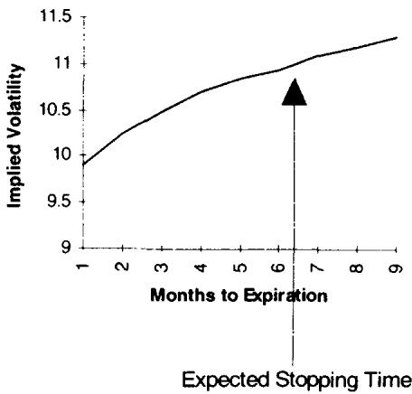
- 第二步：求预期停止时间。注意它是分布而非定点。设其约为 6 个月，则在图 19.30 上插值得波动率 10.95，用它定义敲出期权。
- 第三步：用合成 risk reversal 给敲出定价。主期权（前例的 105 call）按名义到期定价；第二个期权按首次穿越时间的参数定价，从而给 risk reversal 加上一个 skew 维度。
- 第四步：求停止时间到终点之间的 forward-forward。用第 9 章的公式得 FFwd(6,9)=12%，用于确定同名义久期敲入的价值。
停止时间是分布而非定点，所以对应期权头寸的远期资产对冲必须分散布置，以匹配首次穿越时间的分布。
更准确的方法：Dupire-Derman-Kani 技术
1992 年 Dupire 提出二维波动率过程的开创性想法：空间（spot/strike）与时间（到期）的任意两点之间，存在一个由 skew 和 forward-forward 波动率共同隐含的局部波动率。Dupire（1993）、Derman 和 Kani（1994）随后给出数值技术，把时间切成节点间的更小段，构成一个基于日历的"时间-速度"函数，在二项（或多项）树上使用某种柔性节点。
这对任何路径依赖结构意义重大：障碍不只依赖单一波动率，而依赖每个节点的波动率，用二维波动率曲面能更精确地给障碍定价，从而同时绕开 forward-forward 问题和停止时间的估计。在伯克利，Mark Rubinstein 独立发现了隐含二项树，研究由期权价格导出的两个资产价格之间的横向波动率——Dupire 与 Derman-Kani 探索 与 之间的过程，Rubinstein 探索的是 与 之间的过程。
实现的主要障碍是：需要大量步数才能让树收敛到稳定价格，既耗时又有收敛困难，至今没有商用系统实现这套方法。
附加复杂性：方差比
期权交易员按某个频率（可观测的时间间隔）对冲，关心的是自己介入尺度上的波动率；几分钟对冲一次的人不在乎 tick 波动率。但障碍期权响应的是无穷小尺度的波动率，两者可能显著不同（见第 6 章）。
障碍期权定价假设布朗运动的极小/极大值分布遵循与布朗运动本身相同的波动率。最直观的看法是：障碍 = 香草的风险中性贴现概率 payoff（call 为 ，put 为 ），条件于该期间停止时间未被触及。给常规期权加上这个条件，就是它与香草的差别。但停止时间的条件可能对极小/极大值分布敏感。第 6 章的 Parkinson number 分析提示：某日极值的分布可能与对数正态（甚至正态，一日之内差别不大）预期显著不同。
均值回复市场里，障碍期权的障碍分量被高估；趋势市场里被低估。
原因是：敲出更可能在市场有高日内负自相关时被敲出，而期权按收盘到收盘的波动率定价。要记住，结构是被屏幕上一个价格打印触发的，不是资产的终端状态触发的。Taleb 的经验是：每个市场，包括处于趋势中的市场（周采样波动率高于日采样），在一日框架内都会呈现均值回复，原因是参与者的执行滑点、高波动时买卖价差扩大等。
若收盘到收盘波动率低于 Parkinson number，障碍分量被常规方法低估；否则可视为高估。
理论上，这条对应"已实现波动率的尺度依赖"：障碍触发取决于路径的连续上确界 ，而非终值，因此它对样本路径的极值统计（由 Parkinson 高低价估计量刻画）敏感，而标准 BSM 只用收盘波动率，丢掉了这层信息。
十三、练习：加入 put
作为练习，读者可重做前面的例子，给一个 98 put 在 105 敲出、以及同一个 put 在 105 敲入定价。作者认为 put 不过是合成 call，更愿意把时间花在差异真正出现的地方。换句话说，put 的障碍分析可由 call 经 put-call parity 与镜像规则平移得到，真正的新内容只在反向障碍（下一章）才出现。
十四、本章综述：理论与实务的对照
| Taleb 的实务命题 | 对应的理论命题 |
|---|---|
| 障碍处 delta 跳变，对冲滑点大、动态对冲贵 | payoff 在障碍处不连续 ⇒ delta 不连续；停时处的对冲误差 |
| 障碍滑点补偿 = 在障碍处支付的小额数字期权 | 美式二元期权的价值 触障概率 |
| 敲入 + 敲出 = 香草（同 strike、同到期） | "碰障/未碰障"对样本空间的划分，payoff 线性叠加 |
| short barrier 规则：敲入敲出配成香草，障碍处对冲注销 | 两者 gap delta 大小相等、符号相反 |
| 波动率非线性地拉近障碍；long barrier 凹 vega、short barrier 凸 vega | 极值（上确界）分布对 的非线性依赖 |
| 平远期下敲出 delta 不超过 1；上斜远期下 call delta 可超 1 | drift 项进入 PDE；delta>1 ⇒ 某处负 gamma |
| 障碍 ≈ risk reversal，put/call 对称 | 对数正态对称、change of numeraire、几何平均 |
| 正 skew 压低敲出 call 的价；不同 vol 的腿衰减速度不同 | skew 定价 + 期权时间衰减随隐含波动率变化 |
| 敲出 = 香草 − 镜像香草（，比例 ） | 布朗运动的反射原理 + put-call parity |
| 在不变路径上移动概率装回漂移 | Girsanov 测度变换（改测度不改路径） |
| 障碍真实久期短于名义、且是分布 | 首次穿越时间 是停时，服从逆高斯型分布 |
| 单波动率定价在期限结构非平时系统性错价 | 把停时分布塌缩为点 ⇒ 上斜高估、下斜低估 |
| 均值回复市场障碍被高估、趋势市场被低估 | 障碍依赖路径上确界 ⇒ 对极值统计（Parkinson）敏感 |
| 二维局部波动率给障碍精确定价 | Dupire-Derman-Kani 局部波动率 / 隐含二项树 |
核心观点
第一，障碍把香草变成路径依赖，全部新风险都集中在障碍这条不连续线上。delta 在那里跳变，对冲成本、滑点、流动性洞都由此而来。
第二，敲入与敲出是同一枚硬币。互补恒等式不仅给定价关系，还给出 short barrier 这条最干净的对冲思路：把两条腿配成香草，障碍处的跳变自动注销。
第三，障碍可以近似读成 risk reversal，但这只是教学脚手架。它在平远期、稳定 skew 下成立；利差一大、skew 一动，半个 risk reversal 会变成整个，gamma 在障碍右侧变号，近似就崩了。
第四，障碍的真实久期是分布化的停时。用单一波动率、用香草静态复制，在原理上就是错的，错的方向由波动率期限结构的斜率决定。
第五，障碍响应无穷小尺度的波动率与路径极值，所以收盘波动率、均值回复与趋势、Parkinson number 都会进入它的真实价值。
面对一张新障碍结构的操作清单
- 它是常规还是反向？期权在虚值还是实值处生灭？（决定本章方法是否够用，还是要等第 20 章）
- 障碍处 delta 跳变多大？平掉对冲的滑点成本，等于一个多大的数字期权？
- 能否用 short barrier 把它和互补的敲入/敲出配成香草，注销障碍处的跳变？
- 把它读成 risk reversal：对称 put/call 的执行价 、比例 是多少？在障碍处是否归零？
- skew 是正是负？触发价相对执行价在上还是在下，决定它 long skew 还是 short skew？
- 远期曲线平不平？利差会不会让半个 risk reversal 变成整个、让 delta 越过 1、让 gamma 变号？
- 预期首次穿越时间落在期限结构哪里？该用哪个波动率？远期对冲是否按停时分布分散布置？
- 市场更像均值回复还是趋势？收盘波动率与 Parkinson number 孰高孰低？障碍分量被高估还是低估？
一句话收束
障碍期权最该记住的一句：它名义上是一张香草，真实身份是写在一个不连续边界上的、久期随机的路径依赖结构；你能否对冲它，取决于你能否同时管好障碍处的跳变、停时的分布和路径极值这三件被普通 BSM 丢掉的东西。